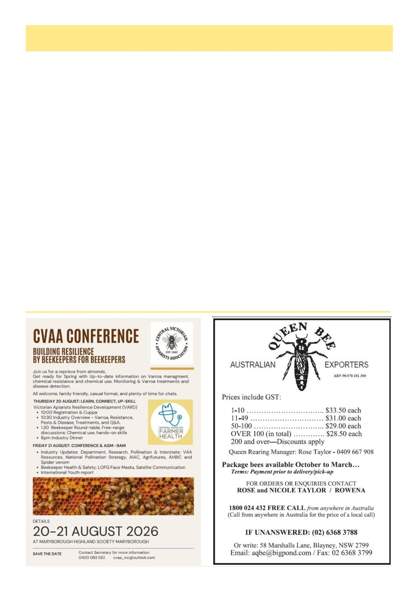

8
Australian Bee Journal
Growing Together, cont’d
(Continued from page 7)
gic planning along with a willingness to roll up his
sleeves and help wherever needed. Mark joined the
subcommittee because he believes in the value that rec-
reational beekeeping brings to the association and wider
industry. He is especially attuned to the everyday reali-
ties facing recreational beekeepers.
Monré Meyer, a Melbourne-based beekeeper and co-
founder of Pure Pollination, brings a systems-driven
approach shaped by a career in engineering leadership
and risk management. Alongside running operations
across Victoria and New South Wales, Monré offers
consulting support to recreational and beginner bee-
keepers and is a strong advocate for biosecurity, educa-
tion and bringing the next generation into the craft.
Andrew Wootton manages hives in Melbourne and
raising queens, he has served on the VAA Board for
three years, including two years as Vice President. As
Chair of the Education Subcommittee, Andrew oversees
the programming of both conferences, workshops and
courses. He is deeply committed to biosecurity, with
involvement in SQRT, the Victorian Bee Biosecurity
Working Group, and the National Varroa Management
Training Workshops.
Tony Wilsmore runs Suburban Bees, a small bee-
keeping business in Moonee Valley focused on honey,
nucleus colonies, training and advice, with a commit-
ment to local, suburban and sustainable practice. He is
Lead Trainer and Biosecurity Officer for the Moonee
Valley Beekeepers Club, a committee member of the
VAA Melbourne Section, a member of the VAA Edu-
cation Sub Committee, and this will be Tony‘s second
year as a VAA Board member.
Together, this team combines commercial know-
how, governance experience and a genuine, personal
appreciation for what recreational beekeeping means to
the people who do it – a fitting mix for a subcommittee
whose whole purpose is connection.
A CLEAR SENSE OF PURPOSE
At its first meeting, the subcommittee set to work
with a simple guiding idea: the VAA should not just
represent recreational beekeepers on paper, it should
actively listen to and support the clubs that bring them
together.
One early priority is refreshing the Recreational
Subcommittee‘s Terms of Reference, including work-
ing through exactly how the VAA‘s regional branches,
affiliated associations and general affiliate clubs relate
to one another and to the Association. It is the kind of
unglamorous groundwork that matters enormously in
practice, because it will make it clearer than ever how
clubs can plug into the VAA and have their voice heard,
including through representation on the subcommittee
itself.
The subcommittee is also exploring ways to bring
club leaders together more regularly, potentially
through informal, low-key catch-ups – by Zoom as
much as in person – where presidents and chairs from
across the state can compare notes, raise shared con-
(Continued on page 9)